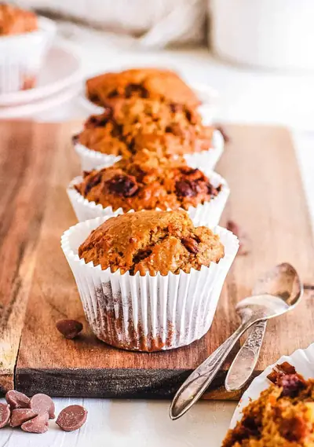

Peanut Butter Muffins

Ingredients
- 2 cups whole wheat flour
- 1 cup coconut sugar
- 2 tsp baking powder
- ¼ tsp salt
- 2 eggs
- 1 cup unsweetened almond milk
- ⅔ cup peanut butter
- 1 tsp vanilla extract
- ¾ cup dark chocolate chips (optional)
Steps
- Preheat the oven to 340 degrees F / 170 C. Line a muffin tray with muffin liners and set aside.
- In a medium mixing bowl whisk together the flour, coconut sugar, baking powder and salt until well combined. If using chocolate chips, stir through the dry ingredients.
- In a separate mixing bowl, whisk together the eggs, milk, peanut butter and vanilla extract until smooth.
- Gently fold the wet ingredients through the dry ingredients. Do not over mix.
- Evenly divide the batter amongst the prepared muffin liners.
- Bake for 20 minutes or until an inserted toothpick comes out clean.
- Allow to cool on a cooling rack.
- Store in an airtight container in a cool dry place.
Recipe by Anjali Shah · The Picky Eater, from The Picky Eater. Saved here for personal use; the original has the full notes, tips and photos. Open original